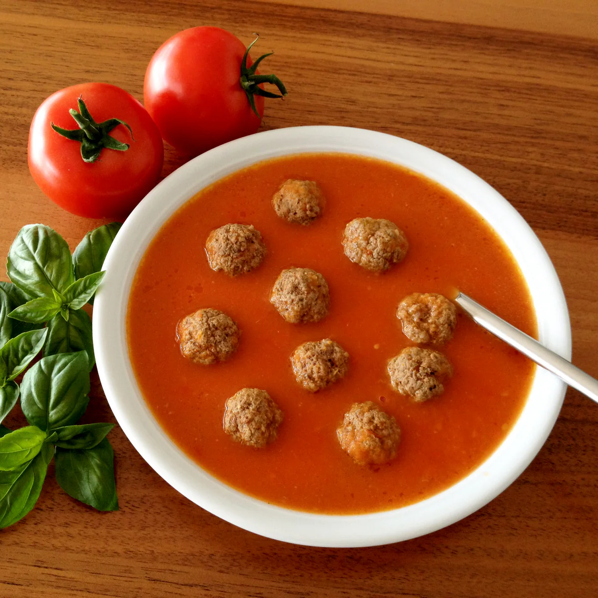

Beschrijving
Tomatensoep! Heerlijk als het koud is; een kom warme, dampende soep. Eet smakelijk alvast!
Ingrediënten
- 10 pomodori tomaten
- 1 ui
- 1 teen knoflook
- 2 groentebouillonblokjes
- 300 gr rundergehakt mager
- 1 el sambal oelek
- 1 el oregano gedroogd
- 1 el basilicum gedroogd
- Peper
- Zout
Instructies
- Was de tomaten en snijd in vieren.
- Snijd de ui in ringen, pers de knoflook en kook samen met de tomaten in een klein laagje water met de bouillonblokjes.
- Kneed het gehakt in een kom, kruid met peper, zout en de sambal oelek en draai er kleine balletjes van.
- Pureer vervolgens de tomaten, ui en knoflook met een staafmixer tot een gladde massa.
- Zet terug op laag vuur en kook de gehaktballetjes enkele minuten mee.
- Breng op smaak met de gedroogde oregano en basilicum, en eventueel wat extra peper.